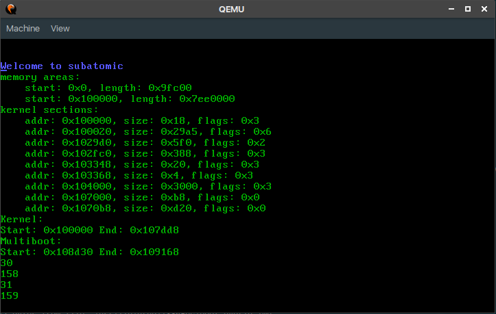

Writing an OS is one of those projects that I've always kinda wanted to do, but never felt like I had enough experience or knowledge to actually follow through on. Every few years though, I end up opening the OSDev Wiki, and thinking "What if..."
Well, now that I'm trying to learn Rust, I have a perfect excuse to write my own toy operating system. After around a day of programming, this post is about what I learned, and what I'm learning in the process.

First, why Rust for a toy operating system? There are a few reasons:
- Safety
- Many things that are runtime errors in other low level languages are compile time errors in rust, allowing you to catch errors faster and more easily.
- Performance
- Rust is designed for systems programming, so it's really fast :)
- Community
- The Rust community is really great, so I'm sure that I'll be able to find support if I'm confused.
- Other OSes and tutorials
- Not only is there a "real" OS being written in Rust, but there are also many good OS Development tutorials.
- Also, it seems like everyone and their dog has written an OS in Rust, so there are plenty of reference implementations.
The most surprising thing about this was how easy it was! I started out by following the intermezzOS tutorial, which got me set up with the x86 ASM, bootloader, and emulator. The intermezzOS tutorial was by far the best one that I came across, but it's incomplete at the moment. That was alright though, because you can pretty easily pick up where intermezzOS leaves off with Philipp Oppermann's "Writing an OS in Rust" series. That doesn't go into keyboard input though (or input of any kind!), so I went to Bare Metal Rust. That's not complete yet either, but it was enough to set up a polling keyboard driver! (interrupts are another battle for another day...)
Here are my notes from the process:
- Starting was super easy! Copy a bit of ASM, link it together, add a bootloader, and you're done!
- Rust makes cross compiling amazingly easy. A bit of JSON and it's compiling without the Linux libc! The OSDev people make it sound like this is a nightmare, but apparently clang makes it really nice.
- QEMU was way faster than I expected - it boots within a couple seconds.
- The quality of tutorials is great. Even for a niche topic like OS development, there were really good tutorials. And what's more, the Rust-specific tutorials seemed better than the ones in other languages!
- Interrupts are like a pain - I just have my keyboard driver polling for now, since I'm too lazy to get interrupts working. If I come back to this though, I'll make sure to document it, since that's badly needed!
- I'm excited to be doing "actual" OS development stuff next - virtual memory, etc. When I was starting, I expected to still be fighting with my toolchain at this point!
- I like how many options there are with where to go - if I get tired of working on memory, I can just switch over to the keyboard driver, or to making the printing API nicer.
- Good tutorials take OS development for "wow, only wizards must be able to do that" to "wow, os development is so much fun!". I can't stress enough how good intermezzOS is. Philipp Oppermann's tutorial goes more in depth but there's less explanation on the why. Still, both great tutorials.
If you'd like to check out what I have so far, here it is! The code's pretty bad, since it's my first major Rust project, and it doesn't do much, but I'm proud of it nonetheless 😊.